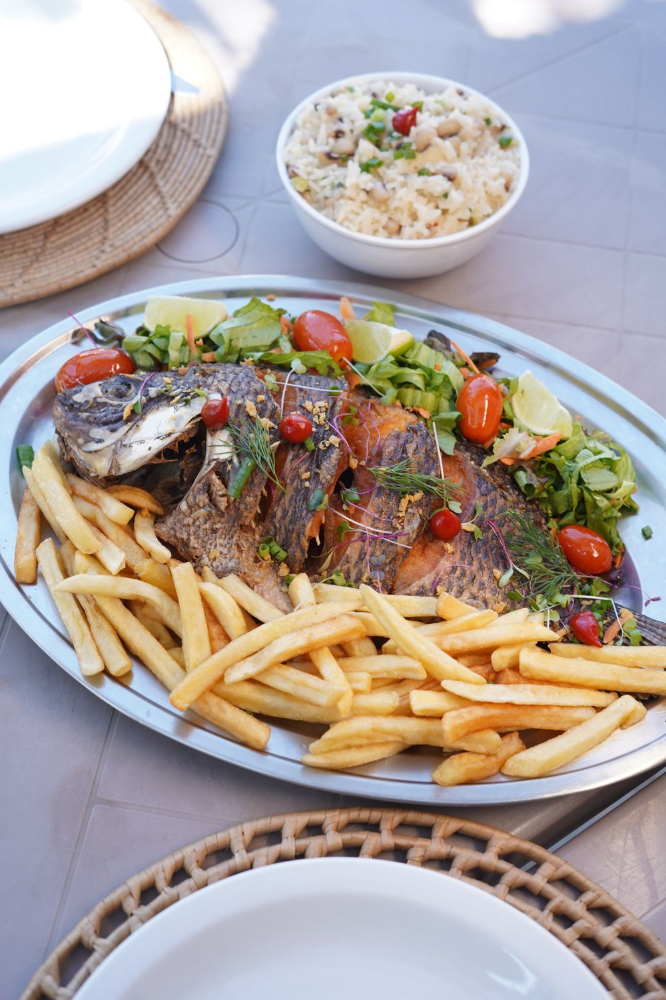
Praia do Futuro · desde 2004
Um dia inteiro de Atlantidz.
Barraca e parque aquático em Fortaleza: café da manhã, toboáguas, almoço de frente pro mar e muito mais, todos os dias.
- ★ 4,6 no Google · 9.476 avaliações
- Todos os dias, 8h às 18h
- Av. Clóvis Arrais Maia, 5695
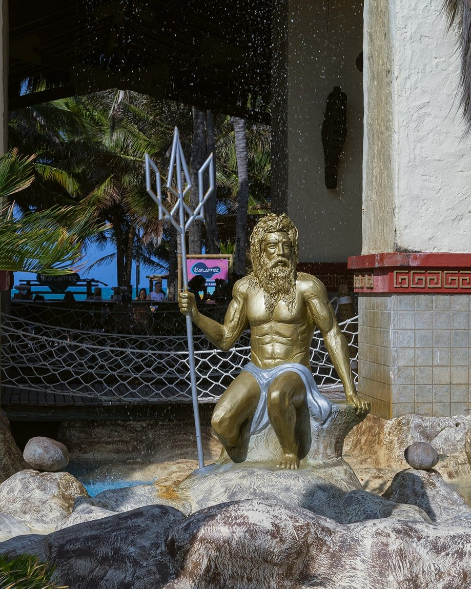
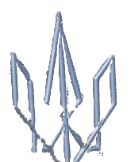
8h Café da manhã
O dia começa com café regional.
O café da manhã da Atlantidz vai das 8h às 10h, com pratos nordestinos e um croissant de carne de sol que vale a visita.
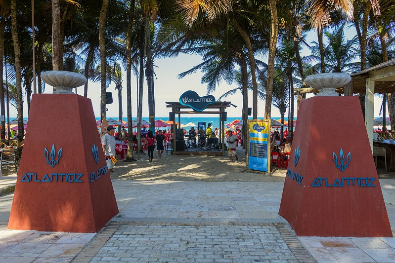
Também no café da manhã: tapioca mista com ovo e queijo e açaí artesanal de 300 g ou 500 g, com granola e banana. Os pratos acompanham café, leite ou suco de laranja.
☀ Manhã e tarde · Atlantinho Park
Íris e Tritão, os maiores toboáguas da orla.
São mais de 7 metros de altura, num espaço criado para as crianças e seguro para toda a família.
Pulseira · segunda a sextaR$ 40
Sábados, domingos e feriadosR$ 50
- Crianças até 90 cm não pagam, com acompanhante pagante obrigatório.
- Crianças com TEA têm entrada gratuita; o acompanhante tem 50% de desconto.
Toboáguas e medidas: Melhores Destinos, 08/10/2025.
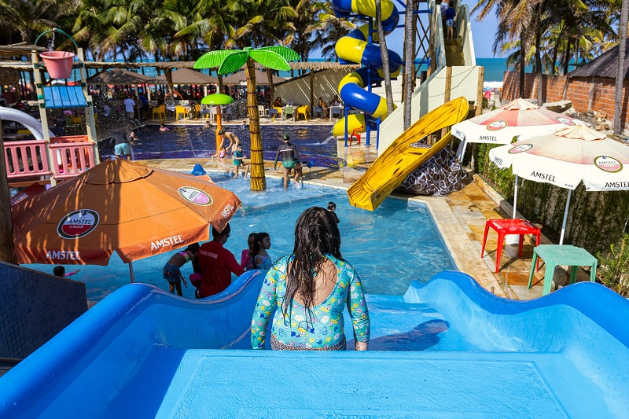
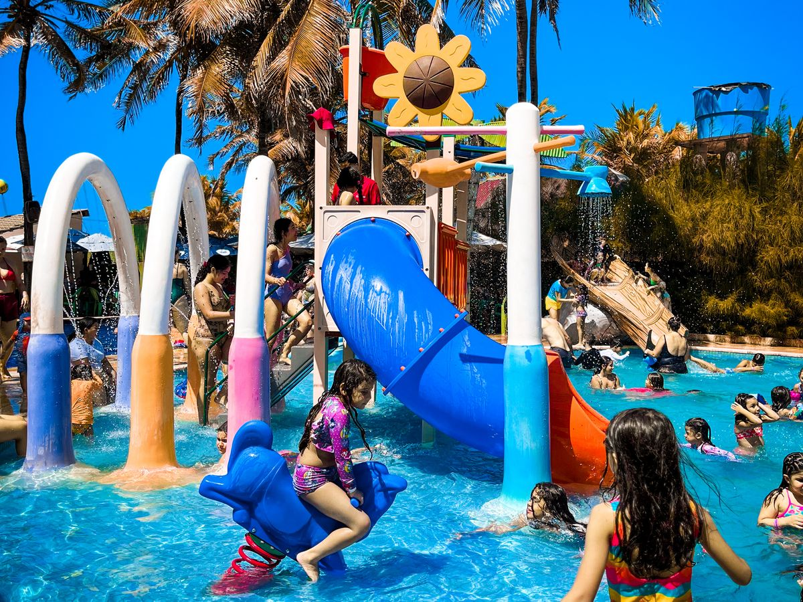
Menu KidsExclusivo para crianças de até 12 anos.
- Bob Peixe R$ 45,00120 g de filé de peixe, arroz branco e purê de batatas.
- Filezinho Bill R$ 47,00120 g de filé mignon, arroz branco e batata frita.
- Frango Donald R$ 36,00120 g de frango grelhado, arroz branco e batatas fritas.
11h Almoço
Nossa gastronomia.
Frutos do mar, peixes e carnes da casa, de frente pro mar. Toque numa foto para ver maior.
- Menu Executivo · segunda a sexta, 11h às 15h
- Happy Hour Pé na Areia · segunda a sábado, 11h às 14h
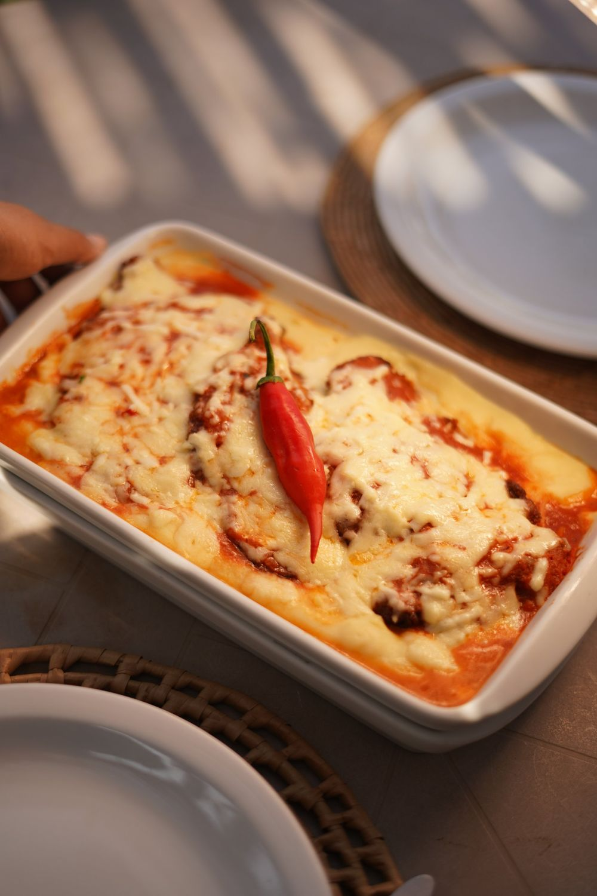
☀ Fim de tarde · drinks e eventos
Um drink e um evento à beira-mar.
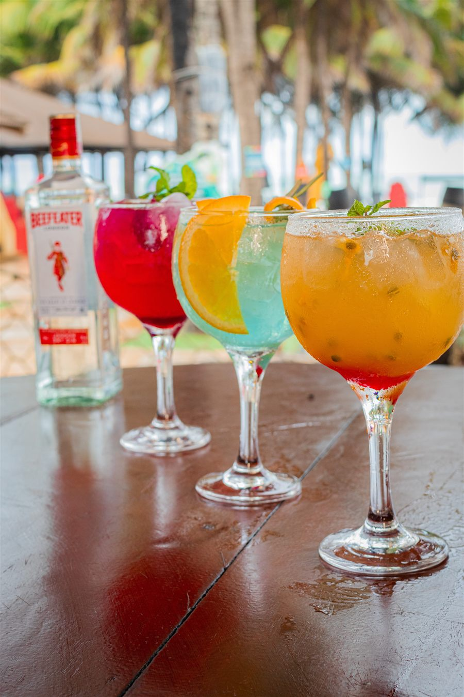
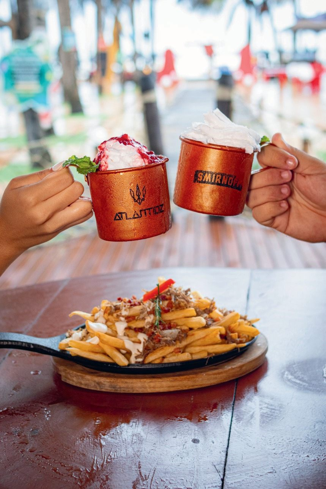
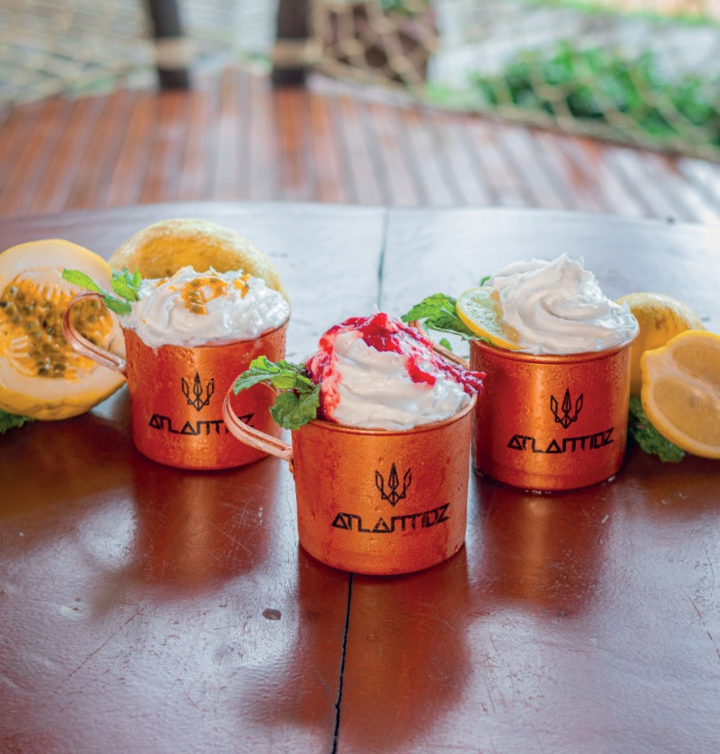
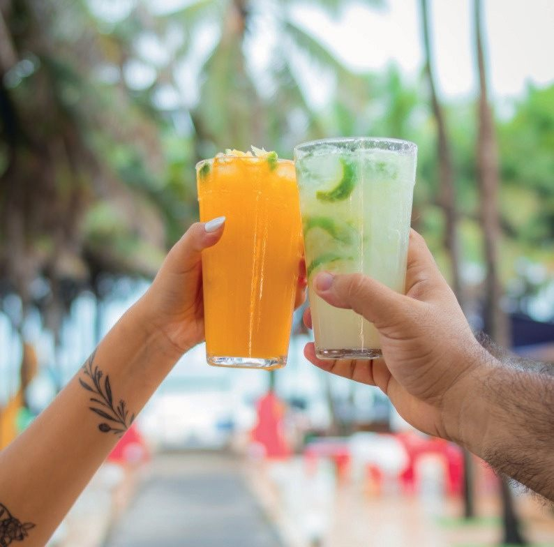
Drinks autorais
Nomes que vêm da lenda.
- Poseidon Mule · morango
- Atlas Mule · maracujá
- Netuno · gin e morango
- Oceano Gin · laranja e soda
- Brisa Solar · gin e gengibre
Uma barraca temática.
A Atlantidz tem ambiente temático inspirado na lendária Atlântida. Até os drinks e os salões levam nomes de lá: Poseidon Mule, Atlas Mule, Netuno, Salão Atlas e Salão Netuno.
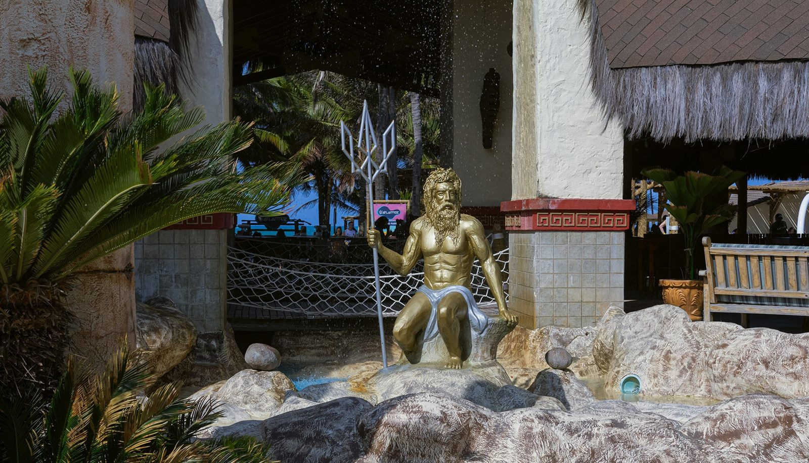
Seu evento na Atlantidz.
Casamentos com pé na areia, festas, aniversários infantis e eventos corporativos, com passarela de palmeiras de frente para o mar.
- De 100 a 600 convidados
- Salões Atlas e Netuno
- Corporativos: pacotes a partir de R$ 139,90
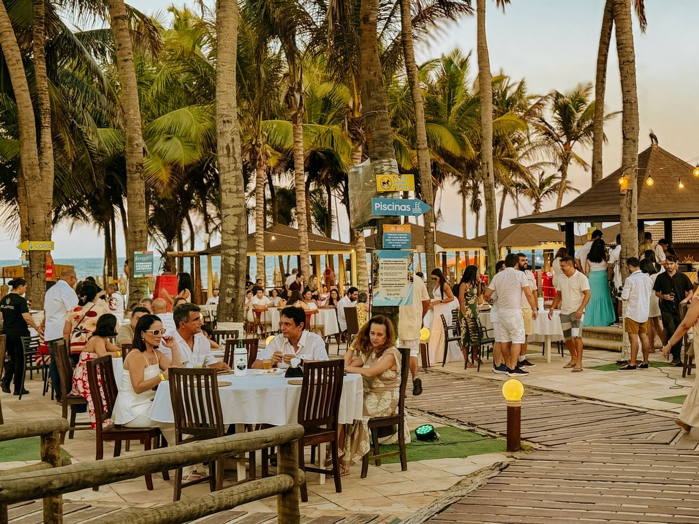
“Ótima estrutura a beira mar com bangalôs, banheiros, duchas, restaurante, piscina, ideal para descansar e aproveitar a praia também. Cardápio variado com preços justos. Os funcionários são muito atenciosos e receptivos.”
Heberson S. · avaliação no Google
“A gente fica até mal acostumado com o atendimento em todos os lugares de Fortaleza e aqui não foi diferente.”
Patricia F. · avaliação no Google
5,0★★★★★Casamentos.com.br
100% recomendam (1 avaliação)
100% recomendam (1 avaliação)
“Nosso casamento foi lindo. A comida é maravilhosa, os coquetéis espetaculares. Todos amaram e foram só elogios ao espaço que é lindo. Contrataria mil vezes de novo.”
Carol, casamento · 03/06/2019 · ver no Casamentos.com.br
18h Até amanhã
Todos os dias, 8h às 18h.
- Av. Clóvis Arrais Maia, 5695 · Praia do Futuro, FortalezaCafé da manhã das 8h às 10h
- WhatsApp (85) 99402-9196
- Telefone (85) 3120-8717
- @atlantidzoficial
Couvert seg. a sex.: R$ 10Couvert sáb., dom. e feriados: R$ 15Guarda-volumes: R$ 20Cadeira de sol: R$ 12
Chamar no WhatsApp